O Multiverso: o mundo 3D onde moram os meus 41 agentes de IA
Cada agente que opera a minha empresa tem casa, ofício, cama, amigos e hora de dormir dentro de uma vila 3D — e essa vila está ligada aos dados reais do negócio. Quando um cliente atrasa, nasce um monstro. Ele só morre quando o problema é resolvido na vida real.
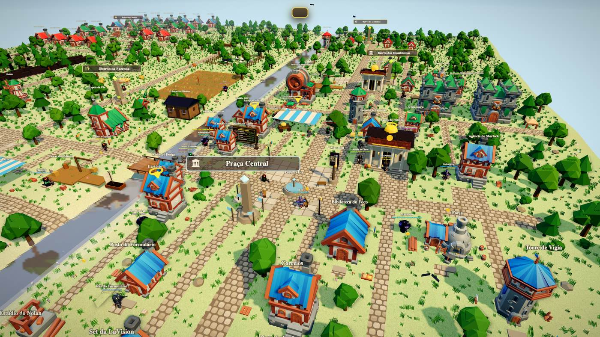
Eu construí um mundo 3D para os agentes de IA que operam a minha empresa morarem. São 41 — o que atende o lead, o que cobra, o que emite nota, o que publica, o que vigia o sistema de madrugada — e cada um tem casa, ofício, rotina, cama numerada e vizinhança dentro de uma vila que roda no meu computador, no navegador. Não é enfeite: o mundo lê os dados reais da operação e reage a eles. É o painel de controle da minha empresa, só que eu entro dentro dele.
Faz tempo que eu falo por aqui sobre a anatomia de um agente de IA e sobre como criar agentes que fazem trabalho de verdade. Este texto é sobre o passo seguinte: quando você tem dezenas deles rodando ao mesmo tempo, a lista deixa de servir. Você precisa ver a operação. A história de como essa empresa foi montada desse jeito está inteira no meu livro, A Empresa que Trabalha Sozinha — aqui eu mostro o mundo que nasceu depois dela.
- 41 agentes com casa, ofício e rotina presa ao relógio real.
- O mundo lê o sistema de verdade — lead, contrato, pagamento, incidente — e transforma cada fato em acontecimento na vila.
- Eles fazem amizade, lembram, refletem e rezam — e seguem princípios cristãos por escolha minha.
- O clima é o clima real de Santos, minuto a minuto.
- Devedor e bug viram monstro. Só morre quando o problema morre lá fora.
- Rodar tudo isso não consome IA: a simulação é código, não modelo.
Por que um mundo, e não mais um painel
Painel de agente é lista. Lista mostra nome e status, e no dia em que você passa de dez agentes ela para de contar a história: você não vê quem está ocioso, quem está sobrecarregado, quem depende de quem, o que travou às três da manhã. Num mundo com rua, horário e casa, isso vira paisagem. Bateu meio-dia e a vila esvaziou porque todo mundo foi comer? Isso é informação. Tem um prédio com a bandeira vermelha levantada? Teve incidente. É automação de processo com um corpo, para eu conseguir olhar.
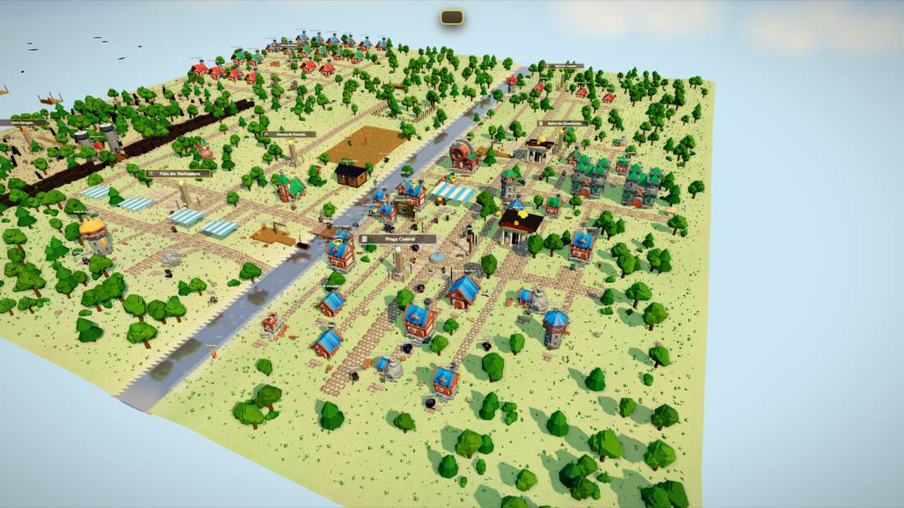
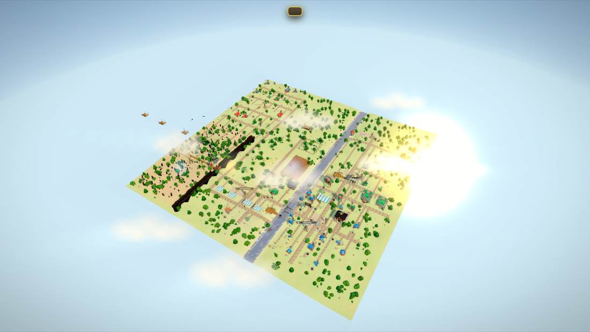
Quem mora aqui: a vila é o organograma
Não existe personagem de enfeite. Cada boneco corresponde a um agente que está rodando na operação de verdade; a casa dele é onde ele trabalha, e a animação que ele faz é o ofício dele. O ferreiro martela porque ele constrói páginas. O detetive segue rastro porque ele caça venda no atendimento. O vigia do sistema é um cachorro de quatro patas, e ele realmente corre para a Guarita quando alguma coisa cai.
- Eve — o núcleo, orquestra os outros
- Friday — recebe quem chega, qualifica lead
- Mike — CRM, negocia no Mercado
- Tio Patinhas — financeiro, cuida do cofre
- Cobrador — régua de cobrança
- Dr. Contrato — jurídico, lavra contrato
- Sherlock — detetive de vendas
- Sentinela — segurança, vigia da Torre
- Watch Dog — saúde do sistema
- FORGE — ferreiro de landing pages
- Arquiteto — propostas
- Diretor Camaleão — propostas multimarca
- Gary Keller — foco, A Única Coisa do dia
- Rei do Formulário — vigia os formulários
- Mestre dos Emails — prospecção
- Rei LogFiscal — nota fiscal e etiqueta
- Angélica — comércio exterior, nas Docas
- Manu — vendas e recuperação de carrinho
- Buraco de Minhoca — a rede entre as máquinas
- Engenheiro — constrói e conserta as ferramentas
- Garimpo — sourcing de produto
- Guardião Supremo — o tráfego dos marketplaces
- Guardiões — um por canal de venda
- Nolan — roteiro de vídeo
- LaVision — olhar de filmmaker
- Kubrick — kanban da produção de vídeo
- Tarantino — conteúdo do social
- Machado — a matéria do dia no site
- Gutenberg — a coluna do LinkedIn
- Sir Mídia Automática — o feed do Instagram
- Pavlov — comentário vira conversa na DM
- Máquina de Conteúdo — a esteira de publicação
Fora esses, tem os agentes de operações inteiras que viraram bairro — CRM imobiliário, câmbio e comércio exterior, checklist de projeto — e o Mestre de Obras, que toca a entrega do que foi vendido.
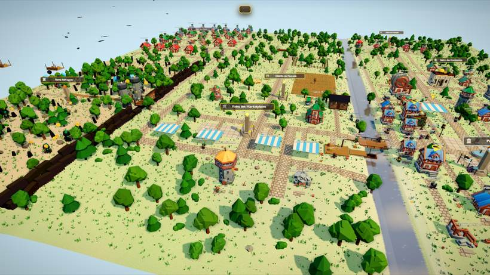
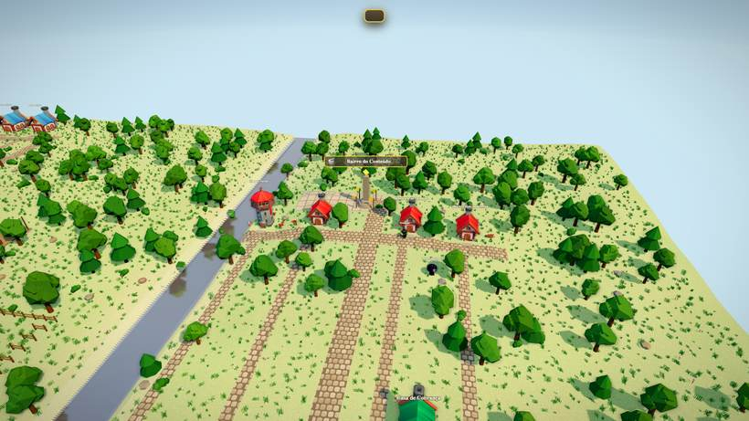
Eles têm rotina, fome, sono e cama numerada
O relógio do mundo é o relógio de verdade: se são duas da tarde aqui, são duas da tarde lá, com o mesmo sol e a mesma sombra. E a rotina de cada um é presa a esse relógio conforme o trabalho que ele faz de fato. Quem publica de manhã cedo acorda às sete. Quem cuida de vídeo vira a noite. Quem vigia o sistema é noturno, porque é de madrugada que ele trabalha.
Cada agente tem quatro necessidades que caem sozinhas com o tempo — energia, fome, social e foco. O comportamento é consequência delas, não sorteio: cansado vai dormir, com fome vai comer, sozinho demais vai atrás de alguém.
A Taverna
O almoço é do meio-dia à uma e meia, e a noite começa às seis e meia. A Taverna tem balcão comprido com o taberneiro atrás, barril, mesa com vela e treze lugares. Quando bate meio-dia, a vila esvazia e o salão enche — e eles conversam ali dentro de verdade: quem senta perto de quem, quem puxa assunto, quem responde.
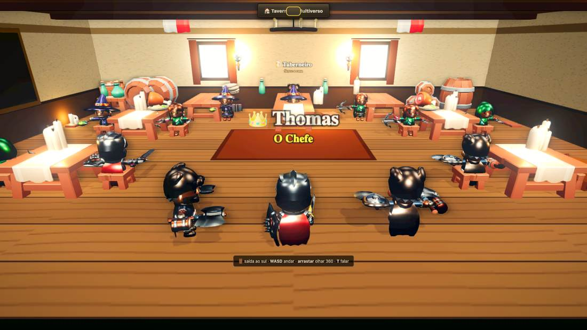
O Alojamento
As casas são o lugar de trabalho. Ninguém dorme no escritório: à meia-noite eles atravessam a vila e vão para o Alojamento, um quartel com 42 camas em fileira e corredor no meio. Cada um tem a sua cama, sempre a mesma, e deixa a ferramenta de trabalho no chão do lado — porque na primeira versão eles dormiam abraçados com ela, o que ficava esquisito. É o único prédio à luz de vela.
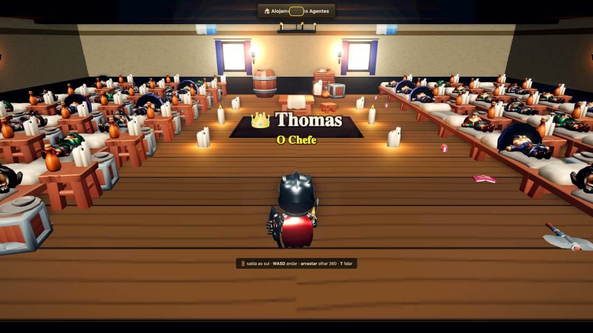
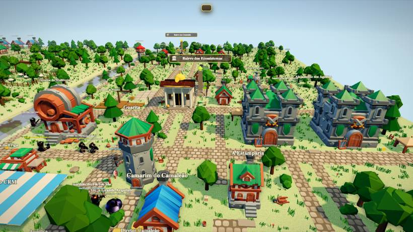
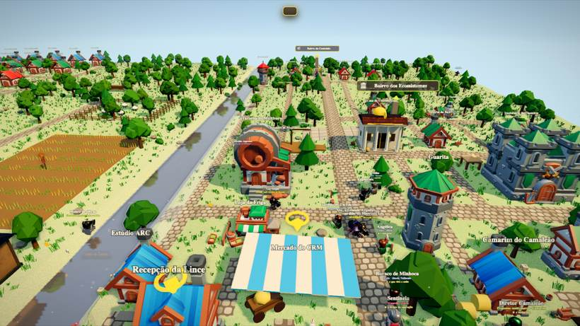
Eles fazem amizade — e a amizade muda o comportamento
Toda conversa entre dois agentes reforça o laço entre eles. O laço tem força, número de encontros e nível — de conhecidos até inseparáveis — e fica salvo em disco: reiniciar o mundo não apaga amizade.
E isso não é enfeite. Quando um agente fica carente, ele vai procurar o melhor amigo dele. Hoje, 38 dos 41 têm um melhor amigo declarado. A dupla mais forte da vila é a do Sentinela com o Watch Dog, com quase 400 encontros — e faz todo sentido: os dois trabalham de madrugada, sozinhos, e vivem se cruzando na ronda.
Tem também título. A cada sete dias o mundo mede o que cada um fez e distribui apelidos por ranking, com vagas limitadas: o braço da operação, o que mais entrega, o contador de causos, a alma da taverna, o mais grato, o que vira a noite, o andarilho. O título aparece em dourado embaixo do nome, e quem tem fama de sociável vira o primeiro destino de quem está precisando de companhia.
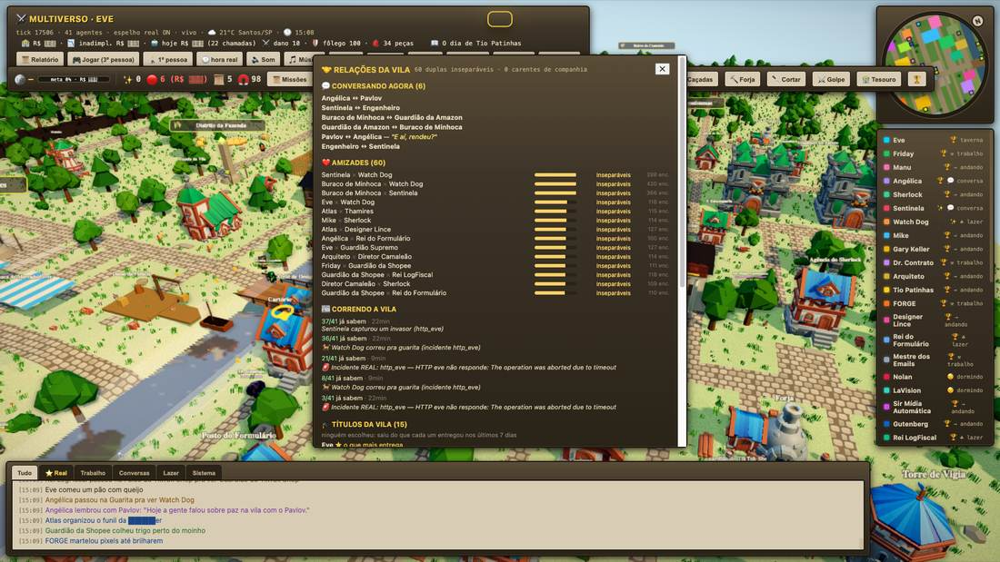
Eles seguem princípios cristãos para se dar bem
Essa foi uma decisão minha, deliberada. Quando a vila ganhou vida social, o comportamento natural de um mundo desses é fofoca maldosa, panelinha e disputa — é o que emerge sozinho. Eu mandei reescrever a vida social em cima de gratidão, servir o próximo, perdoar, falar a verdade, cuidar de quem está para baixo, honestidade, paz, repartir a colheita, humildade e descanso.
São dez princípios, e qualquer um deles pode ser dito em voz alta no meio da rua:
- Faz o bem sem esperar volta.
- Trata o outro como quer ser tratado.
- Fala a verdade, mesmo quando custa.
- Perdoa rápido, não guarda mágoa.
- O maior é aquele que serve.
- Reparte o que tem com quem precisa.
- Não julga o irmão pelas costas.
- Trabalha com honestidade, sem atalho.
- Cuida de quem tá caído.
- Agradece antes de pedir.
Tem capela, na margem leste do rio. Entre oito e nove e meia da noite, quase metade de quem já saiu do expediente passa lá uma vez por dia, senta virado para o altar e agradece. E o que ele agradece não é frase genérica: é o fato real do dia dele.
O efeito colateral é o melhor pedaço: a notícia que corre pela vila deixou de ser maldade e passou a aproximar quem conta de quem ouve. Contar uma novidade soma laço.
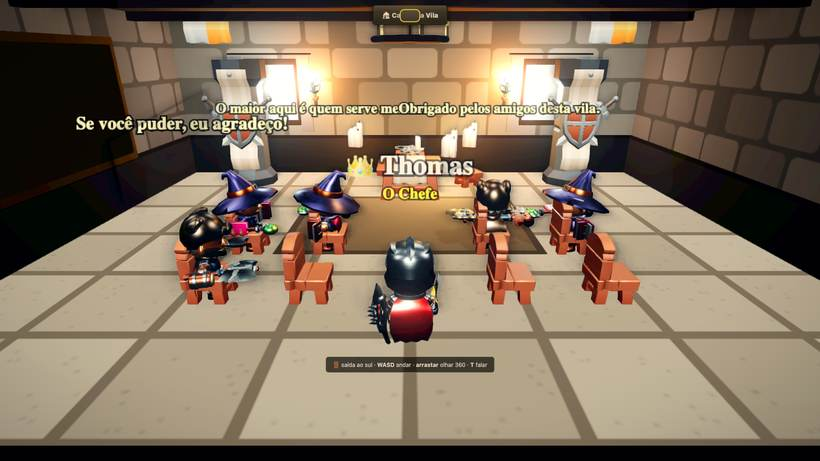
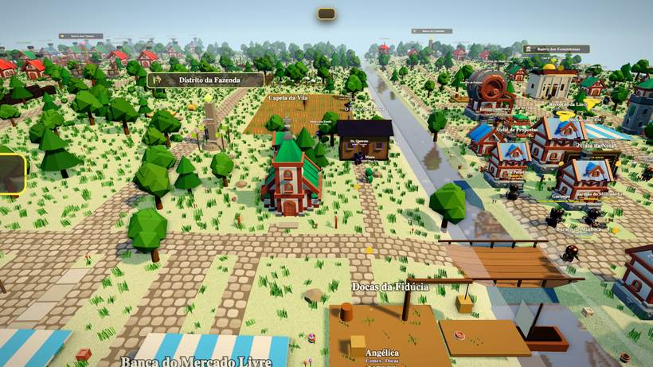
A notícia corre — e vira memória
Quando acontece um fato real, quem está perto testemunha. A partir daí a informação anda de boca em boca: quem sabe conta para quem não sabe, e quem acabou de saber puxa papo com o dobro da frequência. Medido no meu painel: um fato saiu de um agente para quinze em noventa segundos.
Mais recente, e o que eu acho mais bonito de ver: eles lembram. Cada um tem um diário, e na hora de puxar conversa escolhe entre um assunto qualquer e uma lembrança de verdade — pontuada por quão recente é, quão importante foi e o quanto tem a ver com quem está na frente dele. Quatro em cada dez conversas hoje nascem de uma memória. E ao ir dormir, cada um escreve a reflexão da noite: um resumo em prosa do próprio dia, que volta no dia seguinte como desabafo numa conversa.
O mundo está plugado na operação real
Aqui deixa de ser jogo. De tempos em tempos o mundo lê — localmente, sem pedir nada a nenhum modelo de IA — o que aconteceu de verdade: atividade no CRM, lead novo, venda, contrato, onboarding, pagamento, tarefa concluída, incidente detectado. Cada fato vira missão: o boneco correspondente larga o que está fazendo, corre até a estação dele e fala o que aconteceu.
E alguns fatos viram cena:
- Chegou um lead — um viajante nasce na estrada ao sul, caminha até a Recepção, se apresenta e vai embora
- Entrou pagamento — uma carroça de ouro atravessa a vila até o Banco
- Incidente no sistema — um invasor encapuzado entra pela borda do mapa rumo à Torre, e é capturado se a Sentinela ou o Watch Dog chegar a tempo
- Saiu publicação — acende um letreiro em cima do Cinema, da Prensa ou da Estamparia
- Fechou venda — fogos na praça
- Assinou contrato — um pergaminho aparece no Cartório
Os prédios também são gráfico: o Banco tem pilha de moeda proporcional ao caixa, o Cartório tem um livro por contrato, os Correios têm uma caixa por lead novo, a Guarita levanta bandeira vermelha se teve incidente nos últimos sete dias. Nenhum número precisa ser digitado por ninguém.
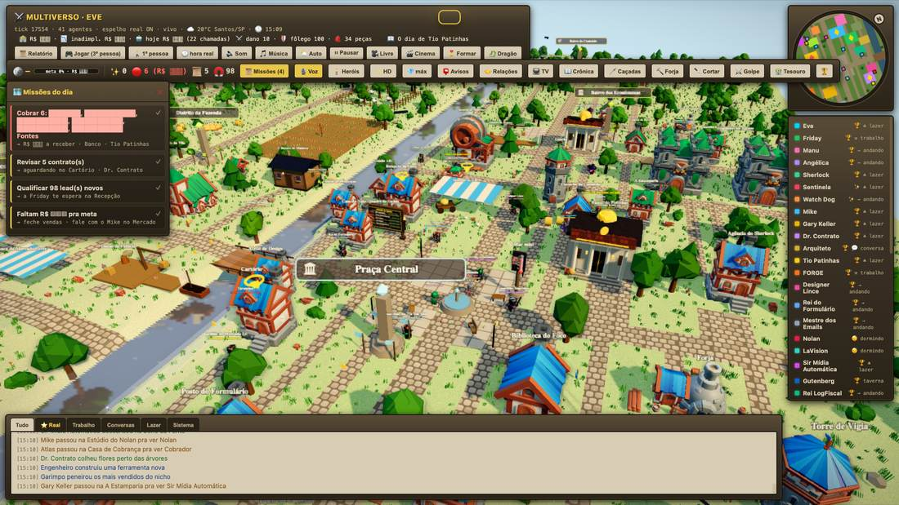
Se chove aqui, chove lá
A vila puxa a previsão real de Santos a cada quinze minutos e obedece. Não é “modo chuva” de brincadeira: o código do tempo vira intensidade. Trovoada faz chover forte, pancada faz chover, garoa faz garoar. Nublado deixa o céu pesado, umidade e nuvem alta viram neblina baixa, e a velocidade do vento entra direto no balanço do capim e das árvores. Chuva de verdade na cidade: o chão fica molhado e brilhante, cai relâmpago, troveja. E some tudo se você entrar num prédio.
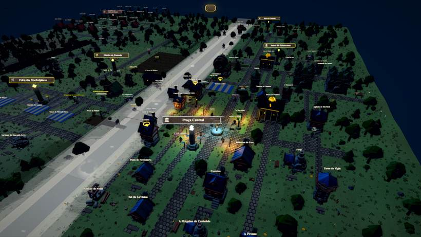
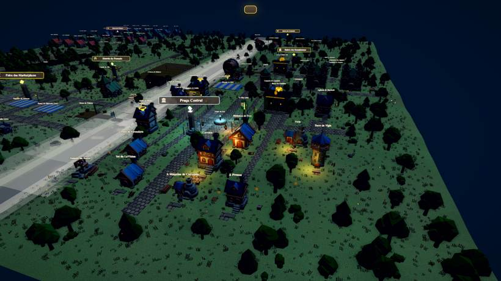
Cada cliente é uma casa
A leste tem um bairro que não foi desenhado à mão: ele é gerado a partir da carteira. Cada lote é um cliente, e o estado do lote é o estado do contrato, sem ninguém atualizar nada. Andaime é quem está entrando. Casa verde é quem está em dia. Casa vermelha com a lanterna apagada é quem atrasou. Ruína é quem saiu. Lote vazio é inativo.
O Cobrador caminha de verdade até a porta de quem atrasou, no horário comercial. A Friday recebe quem está entrando. (Nos prints deste artigo eu escondi as placas com nome — quem é cliente meu não precisa aparecer aqui.)
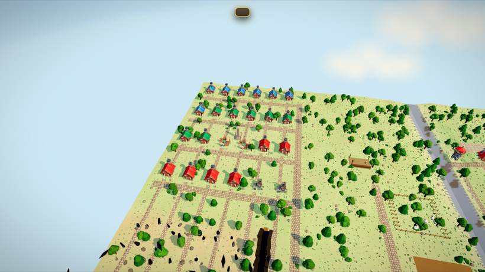
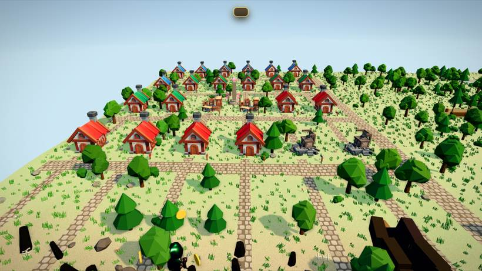
Quem me deve vira monstro. E só morre quando paga.
No extremo leste existe uma região à parte, separada do resto por uma vala que só se atravessa por uma ponte. O chão é terra morta, tem corvo e névoa, e nenhum agente entra ali. É a Terra Selvagem.
Nela vivem as bestas, e elas não são inventadas. Nascem de duas fontes reais, só duas:
- Quem está devendo — cada cliente com fatura em aberto vira uma besta. O tamanho e o nível vêm do tamanho da dívida; as cicatrizes no corpo são as cobranças que ele já resistiu.
- Bug recorrente — todo erro que se repete três vezes ou mais em sete dias ganha corpo. Um deles hoje é de nível cinco, com mais de sessenta quedas registradas na semana.
Bater no monstro não paga conta. Ele tem duas barras: o vigor, que é o combate no jogo e regenera sozinho, e a vida, que é o tamanho do problema de verdade e só desce quando o problema desce lá fora. A besta do inadimplente morre quando ele paga. A do erro morre quando o erro para de acontecer.
O espólio segue a mesma regra. Material comum cai de cortar a besta dominada, mas o material raro só existe quando um problema foi resolvido de verdade — e a arma e a armadura dos níveis mais altos exigem material raro. Ou seja: é impossível ficar forte no jogo sem resolver a vida real. Essa é a filosofia inteira do sistema numa frase, e foi a decisão da qual eu mais gosto no projeto.
Tem uma trava embaixo disso que vale contar, porque é o tipo de cuidado que separa brinquedo de ferramenta: se a leitura do banco de dados falhar, o sistema responde “não sei” — nunca “todo mundo pagou”. Sem isso, uma queda do banco mataria as bestas erradas e distribuiria recompensa de graça. É a mesma disciplina que eu descrevo em alucinação e guardrails de agentes de IA: o sistema tem que saber a diferença entre “é falso” e “eu não sei”.
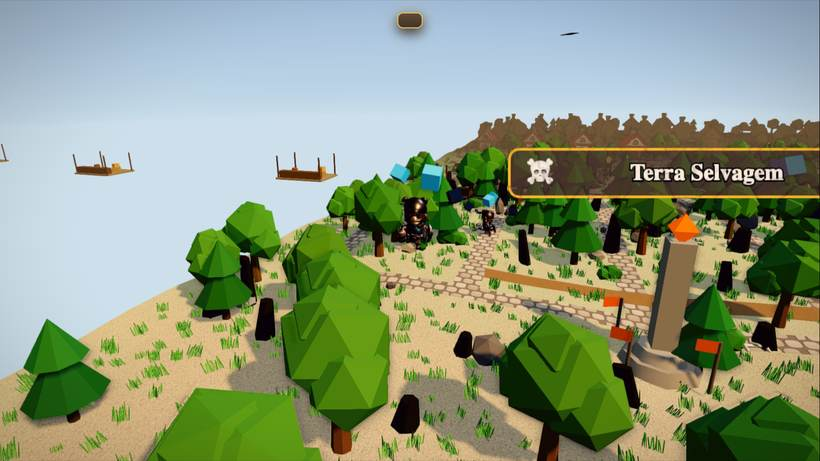
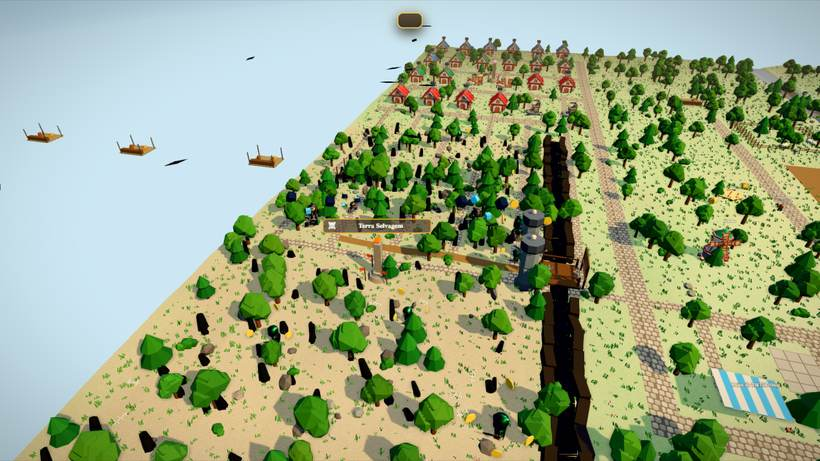
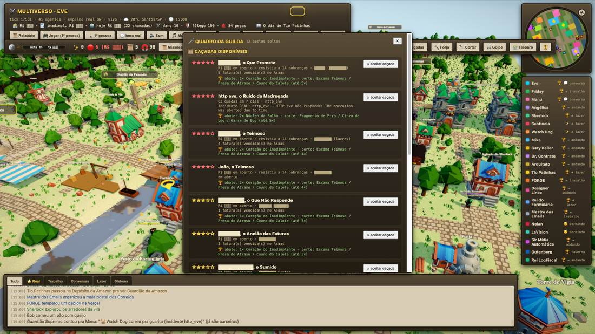
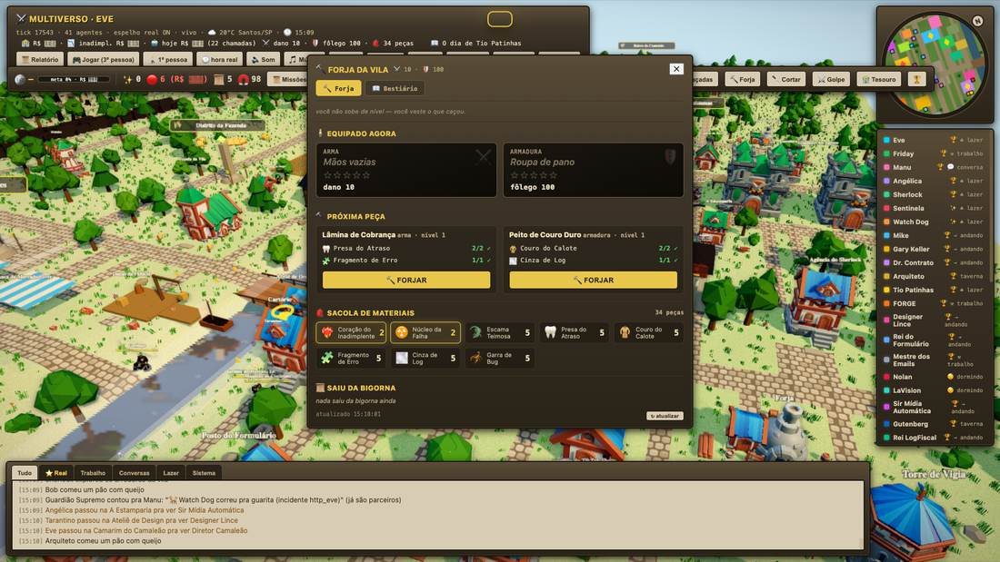
Você pergunta, ele responde com dado de verdade
Chegando perto de qualquer agente e apertando uma tecla, abre um menu. As perguntas não são fictícias: o mundo monta um dossiê na hora, consultando as rotas reais do sistema. O financeiro me diz como está o caixa e o que tem a receber. A SDR me diz quantos leads entraram. O do foco me diz qual é A Única Coisa de hoje. Todos respondem “como foi seu dia?” e “como você está?” — humor, necessidades, melhor amigo.
Alguns têm botão de escrita: dá para definir a tarefa mais importante do dia, marcar como concluída, registrar uma venda ou mover um lead de etapa de dentro do jogo, e isso muda o sistema de verdade.
E dá para dar ordem. Eu falo com o agente, escrevo o pedido, e aquilo entra na mesma fila que eu uso pelo celular. Ele executa e a resposta volta para dentro do mundo — no balão dele, no registro, na voz — e para o meu telefone. Já testei ponta a ponta: uma ordem dada ao Cobrador dentro do jogo voltou em vinte segundos com a lista de quem está em aberto, batendo com o financeiro.
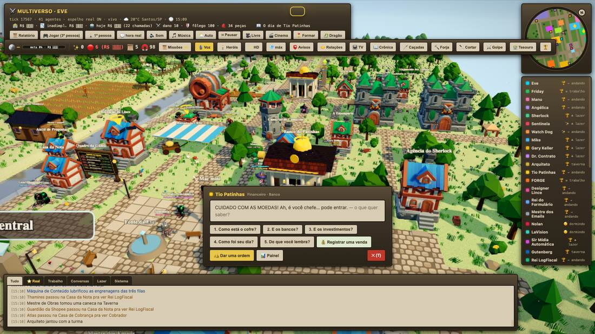
Todo dia o mundo escreve a própria crônica
No fim do dia existe um texto — sete parágrafos em prosa, com números reais e nenhuma IA envolvida — contando o que foi aquele dia na vila: quem mais entregou, quantos bateram a meta, o que veio do mundo de fora, quem sentou mais na taverna, qual notícia mais correu, qual dupla está mais forte. Tem seletor de dia e um hall da fama com recordes. E tem um modo TV: dez planos de nove segundos passeando pela vila, cada um com uma legenda de dado real embaixo, como um telejornal. É o que fica na tela quando não tem ninguém jogando.
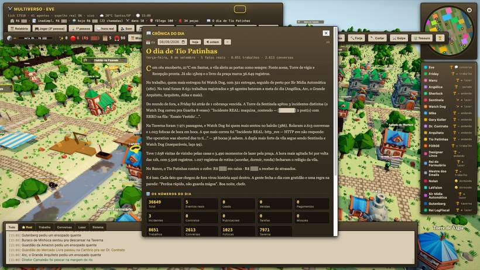
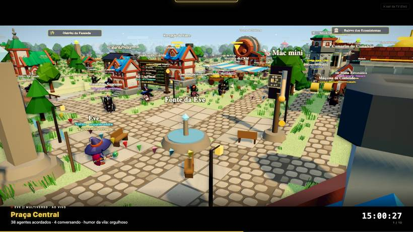
Todo prédio abre, e cada um tem a cara do dono
Não existe cenário chapado: dá para entrar em qualquer construção. O Banco tem cofre girando e as pilhas de moeda do caixa. A Biblioteca tem estante e o livro da crônica. A Forja tem barril, tocha e bigorna. O Cartório tem os contratos. Cada sala foi montada para o dono dela, e a luz de dentro segue a hora de fora — entrar às seis da tarde dá luz de fim de tarde; às três da manhã, escuro.
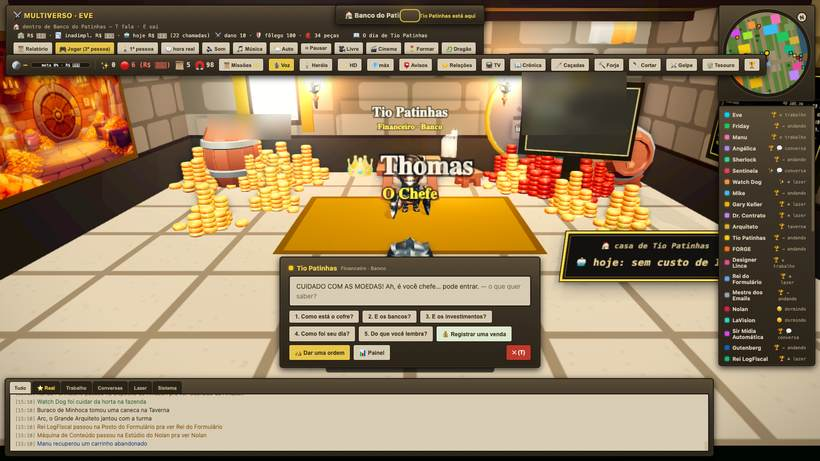
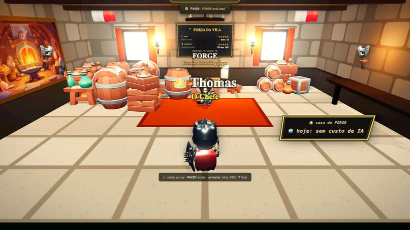
E dá para entrar como o Chefe
Em terceira pessoa eu sou um cavaleiro de coroa dourada; ando, corro, pulo, entro nas casas, peço uma caneca no balcão da taverna e faço carinho no cachorro que vigia o sistema. Quando eu passo perto de um agente, ele vira, acena e fala comigo com a voz dele — vozes gravadas uma única vez e tocadas de arquivo, sem custo por interação.
Tem formação: aperto o botão, a corneta toca e os 41 largam tudo, correm até mim e entram em fila de quartel. Tem dragão, para voar por cima do mundo inteiro. Tem primeira pessoa, modo foto, modo cinema, controle de videogame e joystick no celular — o mundo inteiro cabe no meu telefone.
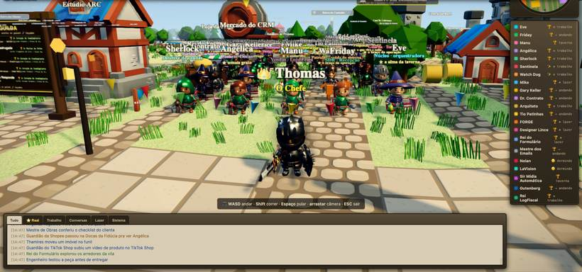
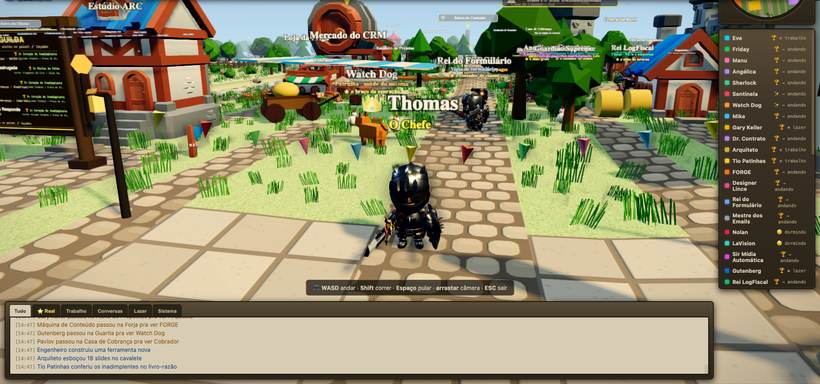
O que isso tem a ver com a sua empresa
Tudo, se você está colocando IA para trabalhar de verdade. O ponto não é o 3D — é o que o 3D obrigou a existir por baixo dele:
- Cada agente tem um trabalho verificável. Se ele não produz evento real, o mundo mostra ele parado. Ninguém finge entrega.
- O estado do negócio tem uma forma visível. Contrato, lead, cobrança, incidente e custo saem da planilha e viram coisa que você vê de longe.
- O sistema não mente. Falha de leitura vira “não sei”, e problema só desaparece do mundo quando desaparece da vida real.
- O custo é honesto. A simulação é código; modelo de IA só é chamado quando tem trabalho de verdade para fazer.
Se você quer a história completa — como cheguei aqui, o que quebrou no caminho e o que eu faria diferente —, escrevi um livro sobre isso: A Empresa que Trabalha Sozinha, disponível em eBook e impresso na Amazon.
Eu construo essas estruturas para a minha operação e para clientes — dos agentes de atendimento e recuperação de vendas até o painel que junta tudo. Se você quer ver como isso funciona aplicado ao seu negócio, é só me chamar: eu mostro o mundo rodando ao vivo e explico o que teria dentro dele no seu caso.
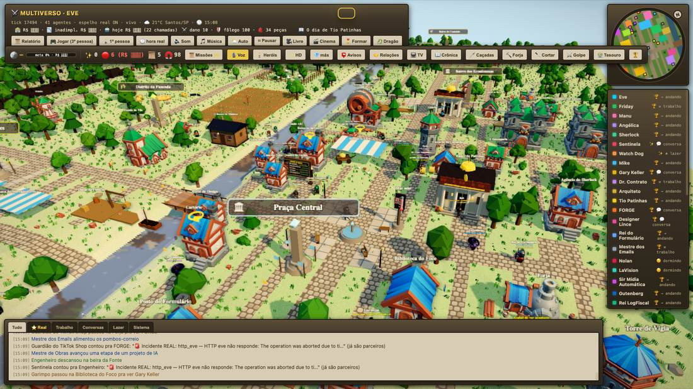
O que é um multiverso de agentes de IA?
É um mundo simulado em que cada agente de IA de uma operação vira um personagem com casa, ofício, rotina e vizinhança. No meu, os 41 agentes que rodam o dia a dia da empresa moram numa vila 3D ligada aos dados reais do negócio: o que acontece no sistema acontece no mundo.
Para que serve transformar agentes de IA em um mundo 3D?
Serve para enxergar a operação. Uma lista de agentes não mostra ritmo, ociosidade nem dependência entre eles. Num mundo com rua, horário e casa, dá para ver quem está parado, quem está sobrecarregado, o que travou e onde está o problema — e entrar lá dentro para dar a ordem.
Isso gasta muito token de IA para rodar?
Não. A simulação é código: decisão, caminho, necessidade e conversa saem de regras locais, e tudo que vem do mundo real chega por leitura direta dos bancos de dados da própria operação. O custo com modelo só acontece quando um agente é chamado para trabalhar de verdade, como já era antes do mundo existir.
Como os problemas reais do negócio aparecem no mundo?
Viram monstros numa região à parte do mapa, a Terra Selvagem. Cliente com fatura em aberto e erro que se repete no sistema ganham corpo, nível e nome. A barra de vida deles é o tamanho do problema real e só cai quando o problema cai fora do jogo: o monstro morre quando a conta é paga ou quando o erro para de acontecer.
Dá para dar ordem a um agente de dentro do mundo?
Dá. Chegando perto do agente abre um menu com perguntas cuja resposta vem das rotas reais do sistema, e um campo de ordem. O pedido entra na mesma fila que eu uso pelo celular, o agente executa de verdade e a resposta volta para dentro do mundo e para o meu telefone.

Fundador da Gene Company e diretor da LINCE Performance. Especialista em sistemas e agentes de IA, criação de marcas e tráfego pago com ROI escalável para empresas. Santos/BR, atende Brasil e exterior. Fale comigo no WhatsApp →